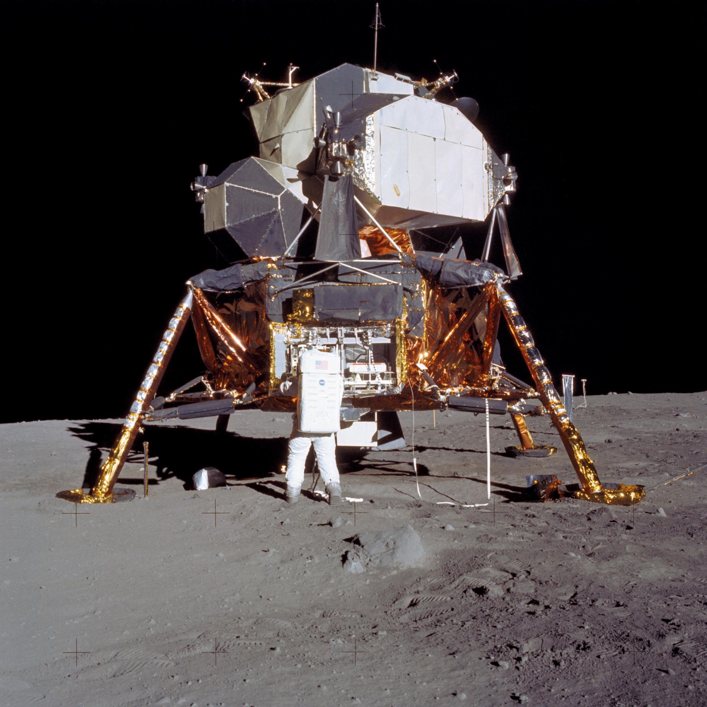
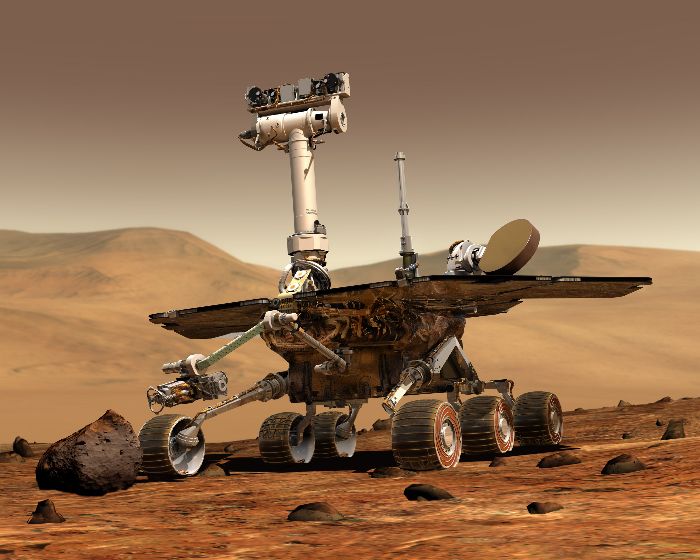
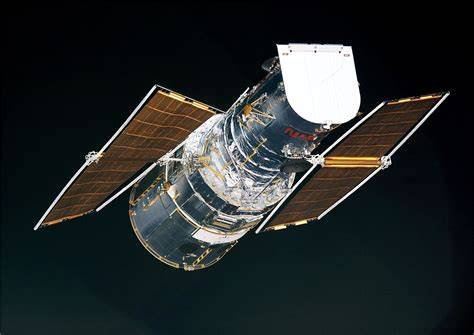
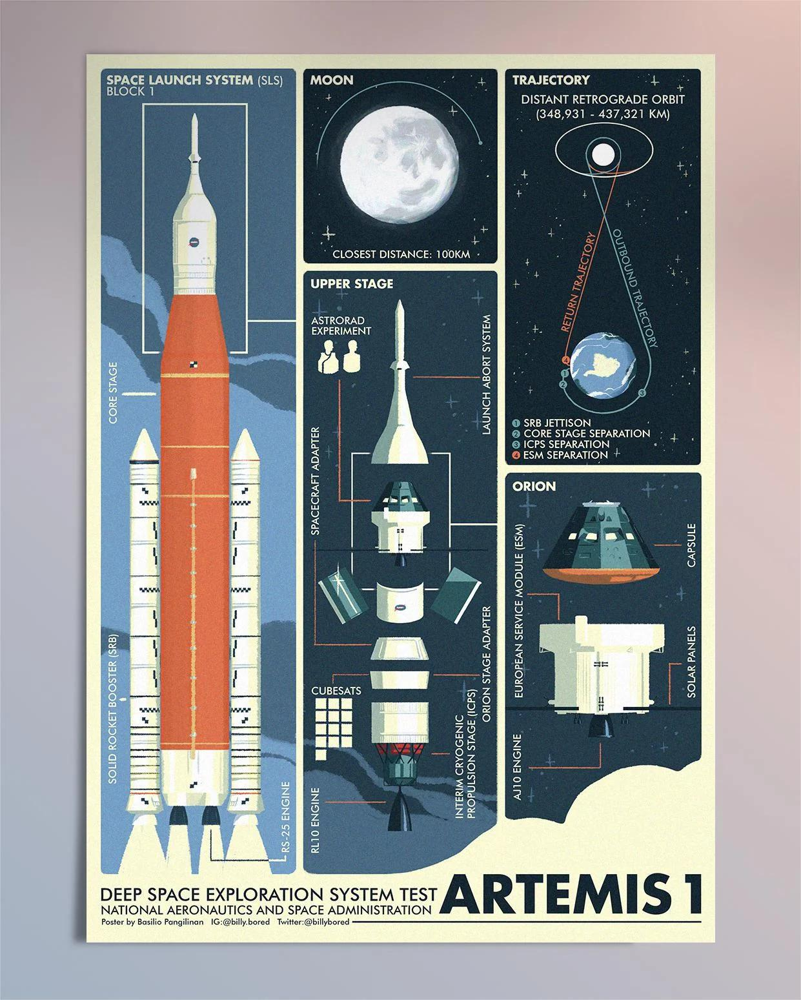
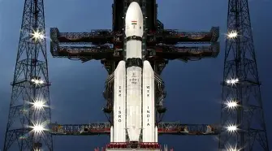

Introduction
Space missions have helped scientists understand the Moon, Mars, the Solar System, and the universe. Robotic spacecraft and astronauts have explored places that were once beyond human imagination.
Major Space Missions
| Mission | Country/Agency | Launch Year | Objective |
|---|---|---|---|
| Apollo 11 | NASA (USA) | 1969 | First human Moon landing |
| Voyager 1 | NASA | 1977 | Explore outer planets and interstellar space |
| Curiosity Rover | NASA | 2011 | Study Mars' surface |
| Perseverance Rover | NASA | 2020 | Search for signs of ancient life on Mars |
| Hubble Space Telescope | NASA / ESA | 1990 | Observe distant galaxies and stars |
| Artemis I | NASA | 2022 | Prepare for future Moon missions |
| Chandrayaan-1 | ISRO (India) | 2008 | Moon exploration |
| Chandrayaan-3 | ISRO (India) | 2023 | Successful Moon landing near the south pole |
| Mangalyaan | ISRO (India) | 2013 | Mars Orbiter Mission |
Apollo 11

Apollo 11 became the first mission to land humans on the Moon. Neil Armstrong and Buzz Aldrin walked on the lunar surface while Michael Collins remained in lunar orbit.
- Launch Year: 1969
- Agency: NASA
- Achievement: First Moon Landing
Voyager 1

Voyager 1 was launched to explore Jupiter and Saturn. It later became the first human-made spacecraft to enter interstellar space.
- Launch Year: 1977
- Still sending data
- Farthest human-made object
Mars Rovers

NASA has sent several rovers to Mars including Sojourner, Spirit, Opportunity, Curiosity, and Perseverance. These robots study rocks, weather, and signs of ancient life.
- Curiosity Rover
- Perseverance Rover
- Ingenuity Helicopter
Hubble Space Telescope

The Hubble Space Telescope has captured breathtaking images of galaxies, nebulae, and distant stars. It has revolutionized modern astronomy.
- Launched in 1990
- Joint NASA-ESA Mission
- Over one million observations
Artemis Program

The Artemis program aims to return humans to the Moon and prepare for future missions to Mars. Artemis I successfully tested the Orion spacecraft.
- Return humans to the Moon
- Build lunar base
- Prepare for Mars missions
Chandrayaan Missions

India's Chandrayaan missions have made important discoveries about the Moon. Chandrayaan-3 successfully landed near the Moon's south pole.
- Chandrayaan-1 discovered water molecules.
- Chandrayaan-2 orbiter continues research.
- Chandrayaan-3 achieved a successful soft landing.
Mangalyaan

Mangalyaan, also known as the Mars Orbiter Mission, made India the first Asian nation to reach Mars orbit on its first attempt.
- Launched in 2013
- Reached Mars in 2014
- Low-cost and highly successful mission
Interesting Facts
- Apollo 11 landed on the Moon in 1969.
- Voyager 1 is the farthest spacecraft from Earth.
- Curiosity has explored Mars since 2012.
- Perseverance is searching for ancient life.
- Hubble has captured millions of space images.
- Artemis will send humans back to the Moon.
- Chandrayaan-3 landed near the Moon's south pole.
- Mangalyaan reached Mars on its first attempt.